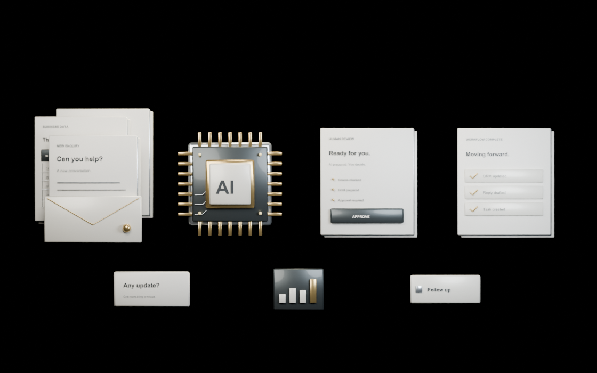

AI consultancy · Data · Automation07 / Signal Studio

Too many tools. Too much chasing.
Let’s connect the work.
Practical AI. Connected work.
Your data.
Put to work.
We connect your data, tools and everyday tasks.
AI does the preparation. Your people stay in control.
Back to Signal ↗Scroll to connect your work ↓
AI that fits your business.
Less busywork.
More useful work.
We start by auditing the way your business works. Then we build AI workflows that connect your existing tools: organising enquiries, preparing reports and moving the next task forward, with approval where it matters.
01Audit the work and find the bottlenecks.
02Build and connect practical AI workflows.
03Help your team adopt and improve them.